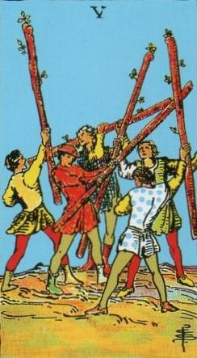
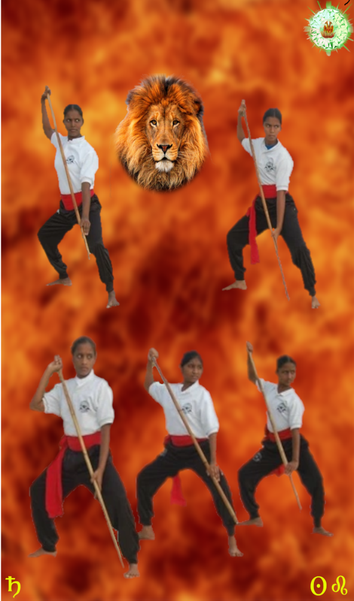
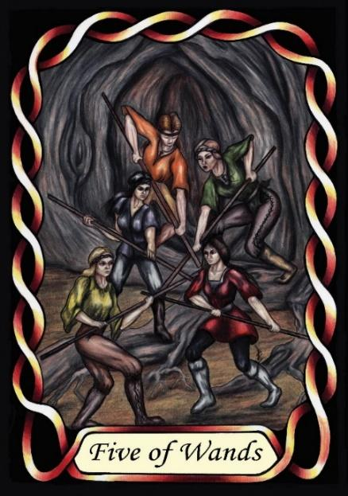

Five of Wands



Sign |
|
Five: True Path |
|
Sign Ruler |
|
Element |
Fire: change |
Modality |
|
Symbol |
Lion |
Decan |
|
Decan Ruler |
|
Time |
Jul 23 - Aug 1 |
Training Leo I
An Apprentice seeks to learn their true path – that process at which they will be magnificent and respected. Influenced by Saturn, they may expect adulation before they have earned it, and the search may involve multiple careers and hobbies. Completion of tasks may be difficult.
Following Waite’s comment, “Imitation, as, for example, sham fight” this can be seen as training. The Apprentice is learning skills that will hopefully lead him to glory in the future. Saturn believes that knowledge (and training) will make him powerful, and he will need combat skills in the early stages of his rise to power.
Leo I is drawn to recognition, but Saturn’s influence tells him this must be achieved through genuine competence, which requires hard work and training. The pressure to excel, fuelled by Leo's pride and Saturn's high expectations, can lead to feelings of inadequacy or fraudulence. Their life is one long exercise in “Shadow Work”, which is working on their weaknesses so as to make themselves more deserving of respect and recognition. Recognizing the need for genuine competence, as emphasized by Saturn, encourages introspection and self-awareness.
Goldschneider Personology
These people have considerable pride and ego, as expected for Leos. Their bearing is of success, and they expect it. However, their expectations from life can often be greater than the reality. Whatever their capability, they will continue to push the limits until they fail, and they do not cope well with frustration, failure and setbacks. They are unlikely to be happy until they learn to exist in the moment, instead of always planning for a better future.
RWS Imagery
A mock battle. Training in the Martial arts as preparation for possible future battles, and especially the study of strategy and tactics as befits the nature of Saturn.
Summary
The Five of Wands represents the Apprentice's quest for self-discovery and mastery, driven by Leo's pride and Saturn's discipline. Through training and mock battles, they prepare for future challenges, seeking recognition and respect. However, they must balance expectations with reality, coping with frustration and failure to find true fulfillment.